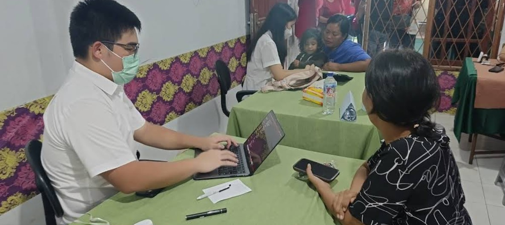

Dua program. Satu tujuan.
Sederhana, konsisten, dan gratis — sejak 2013 untuk warga Sewan, Tangerang.

Pendidikan Gratis
Kelas belajar rutin setiap minggu untuk anak-anak usia sekolah dasar di sekitar Sewan. Fokus pada Matematika dan Bahasa Inggris — dua mata pelajaran yang paling sering menjadi penghalang prestasi anak-anak di sini.
Diajar langsung oleh relawan mahasiswa yang datang secara sukarela. Tidak ada biaya, tidak ada syarat — cukup hadir dan mau belajar.
- Matematika & Bahasa Inggris
- Untuk anak-anak usia SD
- Rutin setiap minggu
- Diajar relawan mahasiswa sukarela
- Gratis sepenuhnya
Layanan Kesehatan Gratis
Pemeriksaan kesehatan dasar dan edukasi gizi untuk anak-anak maupun warga dewasa di sekitar Rumah Singgah Tegar Sewan. Banyak keluarga di Sewan tidak punya akses mudah ke layanan kesehatan — program ini hadir untuk menjembatani itu.
Dilaksanakan oleh relawan dokter yang datang secara rutin dan sukarela. Meliputi pemeriksaan umum, konsultasi kesehatan, dan edukasi gizi sederhana — terbuka untuk semua usia.
- Pemeriksaan kesehatan dasar rutin — anak & dewasa
- Edukasi gizi untuk anak dan orang tua
- Dilayani oleh relawan dokter sukarela
- Gratis sepenuhnya

Setiap minggu, kami hadir


Dukung program ini tetap berjalan
Dengan donasi Anda, anak-anak dan warga Sewan bisa terus belajar dan mendapat layanan kesehatan gratis. Setiap kontribusi berarti.
Pertanyaan yang Sering Ditanyakan
Kami senang menjawab setiap pertanyaan. Berikut yang paling sering kami dengar dari orang tua dan warga sekitar.
Apakah program di sini benar-benar gratis untuk semua anak?
Ya, sepenuhnya gratis. Tidak ada biaya pendaftaran, tidak ada iuran bulanan, tidak ada pungutan tersembunyi. Seluruh program — pendidikan maupun kesehatan — kami biayai dari donasi dan dukungan relawan sukarela.
Siapa saja yang bisa ikut program di sini?
Program pendidikan kami terbuka untuk anak-anak usia sekolah dasar hingga remaja. Layanan kesehatan gratis kami terbuka untuk semua usia — anak-anak maupun warga dewasa di sekitar Rumah Singgah Tegar Sewan. Hubungi kami via WhatsApp jika ada pertanyaan lebih lanjut.
Apa saja yang dicakup layanan kesehatan gratis?
Kami menyediakan pemeriksaan kesehatan umum, konsultasi, edukasi gizi, dan rujukan ke fasilitas kesehatan terdekat bila diperlukan. Semua dilakukan oleh relawan dokter yang datang secara rutin dan sukarela. Terbuka untuk anak-anak maupun warga dewasa — fokus kami adalah deteksi dini dan pencegahan.
Apakah ada syarat khusus untuk mendaftar?
Tidak ada syarat administrasi yang rumit. Anak-anak cukup datang bersama orang tua atau wali. Kami mengutamakan anak-anak dari keluarga yang membutuhkan dukungan ekstra, namun kami tidak pernah menolak siapa pun hanya karena tidak membawa dokumen lengkap.
Bagaimana cara mendaftarkan anak saya?
Cukup hubungi kami lewat WhatsApp atau datang langsung ke alamat kami di Sewan, Tangerang. Tidak ada formulir online yang perlu diisi, tidak ada antrean panjang. Kami akan sambut anak Anda dengan hangat.